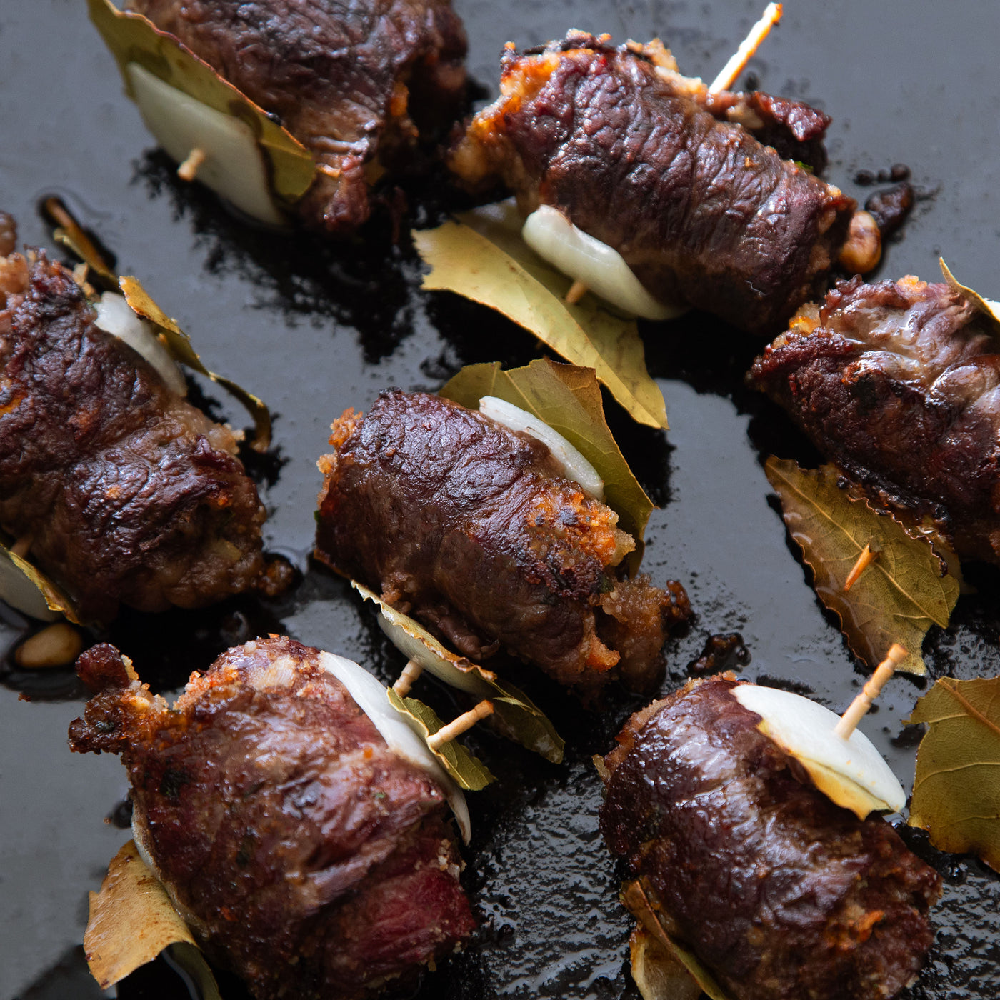

Spedini it's delicious

Another one of mom's
To me italian food and mexican food are similar. We both use about 5 ingredients
but each dish puts them together in different ways.
This is more of a special occasion dish. Wrapping the shaved steak around
the stuffing can be a bit of a hassle.
I love this dish, and there's never enough of it. Make sure you have
someone you love to prepare it with. That's the best part of italian cooking.
You'll notice these recipes don't have exact ingredient lists. Buckle up,
buttercup. You're not in velveeta anymore.
Ingredients
- 28 oz whole peeled plum tomatoes
- 4-5 cloves minced garlic
- about 1 1/2 cup breadcrumbs
- about 1 cup Locatelli Romano, grated
- about 1/4 cup parsley
- pinch of salt, grind or two of pepper pepper pepper
Instructions
Stuffing
- Squeeze tomatoes by hand into frying pan
- add garlic and olive oil, let sit for 10 minutes
- put heat to medium low, simmer for 10 minutes
- add pinch of salt. Remember cheese is salty! and pepper
- add locatelli romano
- add parsley
- add breadcrumbs
- when texture is a nice, moldable paste while retaining crumb,
adjust parsley and cheese to taste.
Shaved beef, and pulling it together
- Cut shaved beef into parallelograms, about 3 inches by 5 inches
- wrap shaved beef around stuffing, making sure the ends fold over
so stuffing will not fall out
- add to skewers
- Broil, bake, or grill until beef is crispy on both sides, about 2
or 3 minutes a side